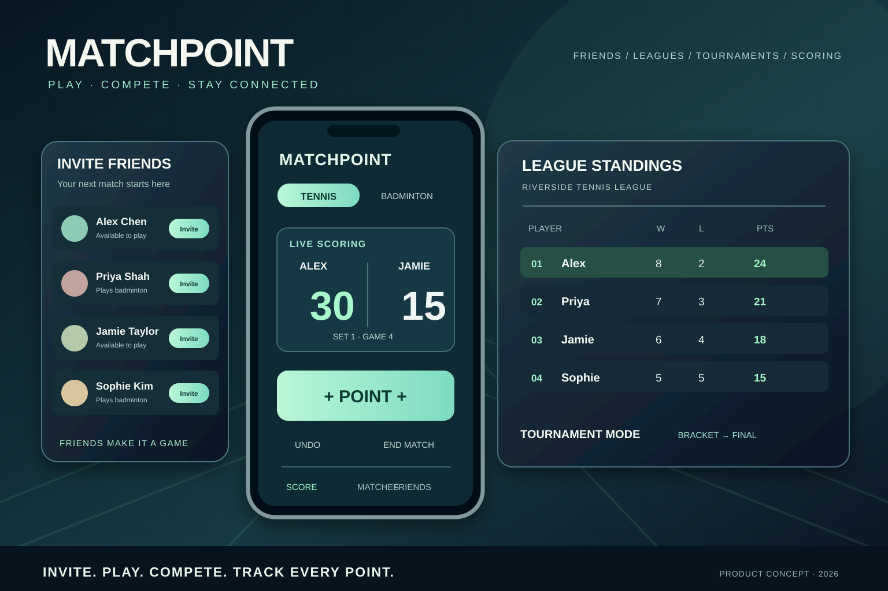
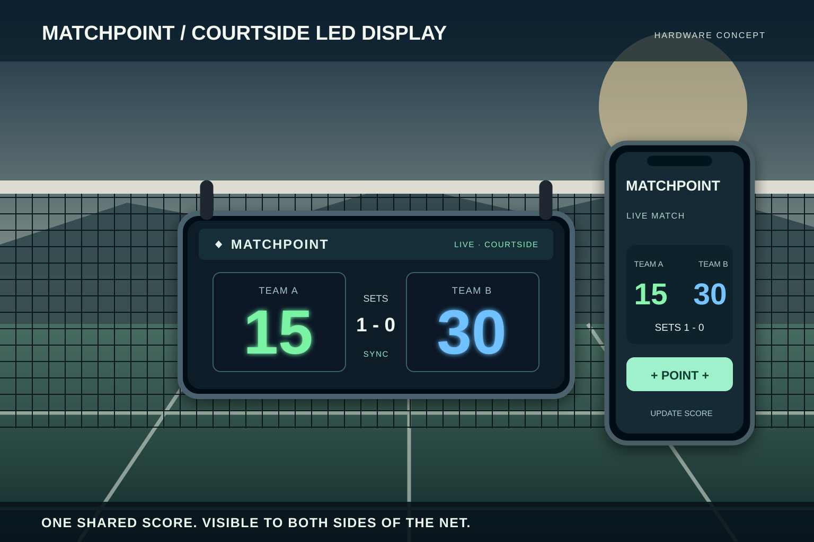

Invite your people.
Bring your friends into the next game and get everyone playing.
Where’s the court? When’s the match? Who’s winning? And why is the fixture information in four different WhatsApp threads? MatchPoint brings friends, live scoring, leagues and tournament competition together for tennis and badminton match days.
Explore the live app ↗ Try scoring ↓
Invite friends, arrange a match, build a league or set up a tournament. MatchPoint makes competition more social, from the first rally to the final point.
Visit the deployed app ↗Bring your friends into the next game and get everyone playing.
Build friendly rivalries through league matches and standings.
Compete in tournament rounds and keep track of the bracket.
Keep the match score as the competition unfolds.
Interface artwork is illustrative rather than a verified capture of the deployed application.
Players need the next court and start time. Captains need to organise a team. League organisers need a schedule and table everyone can trust. Those different jobs shaped the questions, user flows and interfaces explored here.
Follow match day from the moment someone asks “Which court?” to the moment a result is confirmed. That is where a very ordinary question becomes a design requirement.
Find the venue, assigned court, start time and opponent without chasing separate messages.
Record points with minimal interruption and keep the match state easy to understand.
See team fixtures, recent results, upcoming games and match changes in one place.
Track league rankings, scores, match confirmation and a schedule people can trust.
In a good workshop, several versions of “what on earth is going on?” eventually become one problem the team can solve. This board illustrates how stakeholder mapping, user journeys, pain-point clustering and prioritisation can guide MatchPoint.
Capture who is involved and how each person approaches a match day.
Group repeated questions into themes, then identify root causes.
Turn pain points into opportunities and sketch multiple approaches.
Sequence the essentials, surface assumptions and define the next test.
Process illustration: a worked example of how the discovery and workshop activities fit together. It is not a transcript of completed sessions or a claim about participant numbers.
The aim is bigger than a digital scoreboard: a match day people can understand from first fixture to final result.
Choose a user type to see how the information architecture changes around their needs. Select any step to inspect its purpose, potential friction and the proposed design response.
Prioritise the most time-sensitive details at the top of each fixture card.
Separate match-day actions from league management complexity.
Clearly distinguish scheduled, live, awaiting confirmation and completed matches.
Each screen should answer a question somebody actually asks. Trace the problem to the feature and the feature to the thing we’d need to test.
Players need one reliable place to find the fixture details that affect arriving and being ready to play.
Next-match card with court, start time and opponentValidate: can someone find the court and start time at a glance, outdoors and in a hurry?
Players want clear scorekeeping without interrupting the game or juggling devices.
One-tap scoring and a shared courtside viewValidate: missed taps, corrections, deuce, game boundaries and visibility on court.
Players and captains want a dependable record without entering the same information repeatedly.
Result summary, confirmation and match historyValidate: ownership of edits, conflict resolution and recovery when offline.
Captains and organisers need upcoming fixtures and current standings in one place.
League table connected to fixtures and resultsValidate: scoring rules, postponed games, team filtering and accessibility of tables.
Surface the next useful action in the context where it matters. These are design decisions to test, not unearned victory laps about research results.
FOLLOW THE USER JOURNEYS ↗Scoring should be effortless when your hands are full, your attention is on a match and your phone is somewhere in a kit bag. The MatchPoint concept explores an outdoor-friendly physical display, intuitive mobile scoring, and quick updates from a smartwatch.
The design exploration considers tennis and badminton use cases, how scores are captured, how matches are remembered and how connected devices might reduce interruption during play.
Plan interviews and observation with players, captains and organisers to understand the real rhythm of a match day.
Explore moments when manual scoring, attention shifts, visibility and keeping a record can interrupt the flow of play.
Contrast courtside display ideas with app-based and smartwatch interactions, including a portable solar-powered hardware direction.
Use interaction prototypes to explore scoring states, modes and feedback, then identify assumptions for further field validation.
Try the scoring prototype: switch sports, award a point, make a mistake and undo it. It’s an interactive concept, not a live club account, and uses simplified singles rules.
Tap the scorer, just as you might on a phone or watch. See the match update instantly on the courtside display.
Tennis scoring: 0, 15, 30, 40, deuce and advantage. First to six games by two wins a set; a tie-break starts at 6–6.
Scoring is only part of the match. The same experience should tell players when and where to turn up, tell captains who’s playing next, and tell the league what the table actually says. Preferably without three phone calls.
The essential details are visible in one glance, with the full schedule one click away.
Example points table showing how a league could keep rankings transparent after results are approved.
| POS | TEAM | P | W | D | PTS |
|---|---|---|---|---|---|
| 01 | Northside YOUR TEAM | 6 | 5 | 0 | 15 |
| 02 | Riverside | 6 | 4 | 1 | 13 |
| 03 | Willow | 6 | 3 | 1 | 10 |
| 04 | Eastfield | 6 | 1 | 0 | 3 |
Illustrative standings using example teams and a simplified three-points-for-a-win model. Scoring and ranking rules would be configurable and validated for each league.
Four decisions shape the concept: understand the match day, agree which problem matters, explore different ways to solve it, then test what works on an actual court.
Talk to players, coaches and people close to the sport. Frame the jobs, motivations and practical conditions.
Map problem statements, current workarounds and moments where better feedback could improve play.
Sketch across software and physical product directions, balancing outdoor readability and ease of interaction.
Make scoring states clickable, surface edge cases and build a path to genuine field usability tests.

The proposed net-mounted LED display makes the match score visible to both teams, updated from the companion phone app in real time. This is a design concept for a shared courtside experience, not a released hardware product.